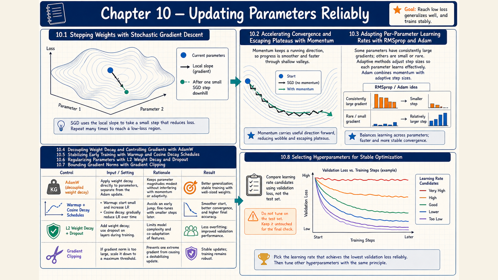
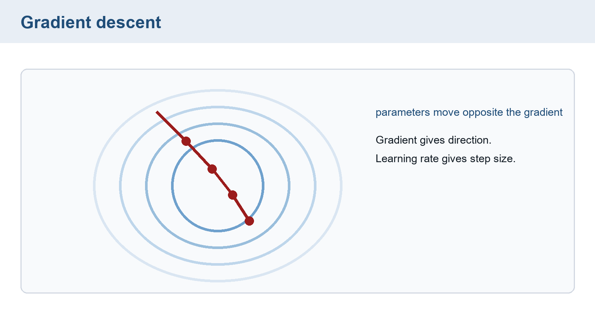

10 AdamW & Momentum: Steering Parameter Updates
A gradient points toward a local reduction in loss, but its size and direction can vary sharply from one mini-batch to the next. Optimizers smooth, scale, and constrain the resulting parameter updates.
A gradient says which direction reduces loss locally; an optimizer chooses the actual parameter step. This chapter compares SGD, momentum, RMSprop, Adam, and AdamW as different ways of turning noisy mini-batch gradients into stable updates.
In code, torch.optim.SGD, Adam, and AdamW hold optimizer state and apply gradients after loss.backward(); gradient clipping uses torch.nn.utils.clip_grad_norm_.
Chapter 10 develops one required stage of the guide’s computation.

The numbered panels correspond to the chapter sections and show how each local result supplies the next operation.
10.1 Stepping Weights with Stochastic Gradient Descent
Gradient descent describes a family of methods that differ mainly in how much data they use to estimate each update direction. The batch choice controls noise, memory use, and update frequency.
- Full-batch gradient descent: Computes the gradient over the whole training set before one update.
- Stochastic gradient descent: Computes an update from one example at a time.
- Mini-batch gradient descent: Computes an update from a small batch of examples.
- Batch size: The number of examples used to estimate one gradient step.
Full-batch updates are stable but expensive for modern datasets. Pure stochastic updates are cheap but noisy. Mini-batches are the practical compromise used throughout neural network training.
Noise is not only a problem; it can help optimization escape narrow local behavior. But too much noise, or an unsuitable learning rate, can prevent convergence.
Full-batch gradient descent averages over the entire training set before every update. Stochastic gradient descent uses one example, and mini-batch training averages a small subset that can be processed efficiently as a tensor.
A mini-batch gradient is a noisy estimate of the full empirical-risk gradient. Larger batches reduce that sampling noise but require more memory and may produce fewer parameter updates for a fixed number of examples.
A parameter update moves opposite the gradient direction.
Gradient descent:
\[ \theta_{t+1}=\theta_t-\eta\,\operatorname{grad}L(\theta_t) \tag{10.1}\]
where \(\theta_{t}\) is parameters before the update; η is learning rate; grad L is gradient of the scalar loss.
The first-order Taylor approximation says the loss decreases fastest locally in the negative gradient direction.
the learning rate controls how far the parameters move along the descent direction.
Mini-batch descent estimates the full gradient from a subset of examples.
Mini-batch gradient:
\[ g_B=\frac{1}{\lvert B\rvert}\sum_{i\in B}\operatorname{grad}L_i(\theta) \tag{10.2}\]
where B is set of examples in the batch; \(L_{i}\) is loss for example i; θ is trainable parameters.
A batch gradient averages the per-example gradients so the update estimates the full-sample direction.
Batch size controls the trade-off between update noise, memory use, and update frequency.
Example: Gradient descent
Starting from parameter 1.0 with learning rate 0.1 and gradient 3.0, the next parameter value is 0.7.
Example: Mini-batch gradient
For gradients [1,3] and [-1,5], \(g_{B}=([1,3]+[-1,5])/2=[0,4]\).
SGD moves parameters using the current mini-batch gradient, so different batches introduce useful but noisy updates. Momentum and adaptive methods store information from earlier gradients to influence later steps.
10.2 Accelerating Convergence and Escaping Plateaus with Momentum
Plain gradient descent reacts only to the current batch. Momentum adds a running direction so a sequence of similar gradients reinforces a stable update instead of being treated as unrelated steps.
- Momentum: An exponential moving average of gradients used to smooth update directions.
- Adam: An optimizer that tracks moving averages of gradients and squared gradients.
- Warmup: A schedule that starts with smaller learning rates before reaching the main rate.
- Decay: A schedule that reduces learning rate later in training.
- Bias correction: The Adam adjustment that removes initialization bias from moving-average moment estimates.
- Learning-rate warmup: A schedule that increases the learning rate gradually during early optimization steps.
Momentum stores one velocity tensor for each parameter tensor. At step t, the new gradient is added to a decayed copy of the previous velocity; the parameter then moves along that combined direction.
This helps when consecutive batches point roughly the same way. Unlike the adaptive methods that follow, momentum changes the direction of the update but does not give separate coordinates different step sizes.
Momentum stores a velocity tensor with the same dimensions as each parameter. Every new gradient contributes to that velocity while earlier contributions decay geometrically.
Consistent gradients build speed in one direction; alternating gradients partially cancel. Momentum therefore differs from simply increasing the learning rate because its update depends on recent direction history.
Momentum smooths the update direction across steps.
Momentum:
\[ v_{t} = \beta v_{t-1} + g_{t};\quad \theta_{t+1} = \theta_{t} - \eta v_{t} \tag{10.3}\]
where \(g_{t}\) is gradient at step t; \(v_{t}\) is momentum buffer; β is decay coefficient; η is learning rate; \(\theta_{t}\) is parameter value.
Momentum keeps an exponentially weighted average of recent gradients. The parameter update uses that average, so repeated gradients reinforce one another while alternating noise is smoothed.
Momentum adds one state tensor per parameter and changes the direction of the update without changing the model objective.
Example: Momentum
With \(\beta=0.9\), \(v_{t-1}=0.2\), and \(g_t=0.5\), the unscaled momentum rule gives \(v_t=0.9\cdot0.2+0.5=0.68\).
Code example: One optimizer step on the running logistic-regression batch
import torch.nn as nn
import torch
import torch.nn.functional as F
X = torch.tensor([[1.0, 0.0], [0.0, 1.0], [1.0, 1.0]])
y = torch.tensor([1.0, 0.0, 1.0])
w = torch.tensor([0.8, -0.3], requires_grad=True)
b = torch.tensor(0.1, requires_grad=True)
optimizer = torch.optim.SGD([w, b], lr=0.1)
optimizer.zero_grad()
loss = F.binary_cross_entropy_with_logits(X @ w + b, y)
loss.backward()
optimizer.step()
print(loss.item(), w.detach(), b.detach())The parameters change in the direction selected by the batch gradient.
One step shows mechanics, not convergence or good hyperparameter choice.
Momentum carries a smoothed update direction across steps. Adaptive methods additionally scale each parameter using a history of gradient magnitudes.
10.3 Adapting Per-Parameter Learning Rates with RMSprop and Adam
A single learning rate can be too large for one parameter coordinate and too small for another. AdaGrad and RMSProp keep a squared-gradient statistic for every coordinate and divide the update by its local scale.
- Adaptive step size: A coordinatewise update size derived from a stored gradient-scale statistic.
- Squared-gradient state: A nonnegative value that records either all past squared gradients or a decayed recent average.
- Elementwise square: Squaring each coordinate separately; for \(g=(2,-3), g^{2}=(4,9)\).
- Accumulator: A tensor stored by an optimizer between updates.
The stored statistic is nonnegative because it is built from squared gradients. Squaring removes sign: a gradient of -2 and a gradient of 2 both contribute 4, so the statistic records scale rather than direction.
AdaGrad adds every squared gradient to a cumulative total. Coordinates that repeatedly receive large gradients acquire a large denominator and therefore a smaller effective step. This can help sparse features, but the total never decreases and may eventually make later updates negligible.
RMSProp replaces the cumulative total with an exponential moving average. The decay coefficient determines how quickly old squared gradients lose influence, so the denominator follows recent gradient scale instead of growing for the entire training run.
Both methods rescale each parameter coordinate independently. Momentum stores signed direction; AdaGrad and RMSProp store unsigned scale. Adam combines both kinds of state in the next section.
AdaGrad shrinks learning rates for coordinates with large accumulated gradients.
AdaGrad:
\[ G_{t} = G_{t-1} + g_{t}^{2};\quad \theta_{t+1} = \theta_{t} - \eta\,\frac{g_{t}}{\sqrt{G_{t}} + \epsilon} \tag{10.4}\]
where \(g_{t}\) is current gradient; \(G_{t}\) is accumulated squared-gradient state; η is learning rate; ε is small numerical constant.
AdaGrad accumulates squared gradients coordinatewise. Coordinates that have received large historical gradients receive smaller future steps.
AdaGrad adapts each coordinate independently but its accumulated state can make later steps very small.
RMSProp uses an exponential moving average of squared gradients.
RMSProp:
\[ s_{t} = \beta s_{t-1} + (1-\beta)g_{t}^{2};\quad \theta_{t+1} = \theta_{t} - \eta\,\frac{g_{t}}{\sqrt{s_{t}} + \epsilon} \tag{10.5}\]
where \(g_{t}\) is current gradient; \(s_{t}\) is exponentially averaged squared-gradient state; β is state decay coefficient; η is learning rate; ε is small numerical constant.
RMSProp replaces AdaGrad’s unbounded sum with an exponential average of recent squared gradients, retaining adaptation while allowing old gradients to decay.
The state tracks recent scale rather than the entire training history.
Example: How squared-gradient state changes one parameter step
Use one scalar parameter with learning rate 0.1 and two successive gradients, 2 and 2.
First gradient:
\(g_{1} = 2\)
\(g_{1}^{2} = 4\)
AdaGrad accumulation:
\(G_{1} = 4\)
\(G_{2} = G_{1} + g_{2}^{2} = 4 + 4 = 8\)
\(\mathrm{step}_{1}=0.1\frac{2}{\sqrt{4}}=0.100\)
\(\mathrm{step}_{2}=0.1\frac{2}{\sqrt{8}}=0.071\)
RMSProp moving average:
\(\beta = 0.5\)
\(s_{1} = 0.5(4) = 2\)
\(s_{2} = 0.5(2) + 0.5(4) = 3\)
The RMSProp state follows recent gradient scale instead of accumulating without limit.
The gradient direction is the same in this trace; the stored squared-gradient state changes only the size of the step.
RMSprop and Adam divide updates by a running scale derived from squared gradients, making coordinates with different gradient magnitudes easier to train together. AdamW then separates this update rule from weight decay.
10.4 Decoupling Weight Decay and Controlling Gradients with AdamW
Adam uses two summaries of the gradient at every parameter coordinate: a signed moving average for direction and a squared moving average for scale.
- First moment: An exponential moving average of gradients that preserves their direction.
- Second moment: An exponential moving average of squared gradients that estimates local gradient scale.
The first moment is an exponential moving average of signed gradients. Repeated gradients in one direction reinforce one another, so this state supplies the update direction in the same way that momentum does.
The second moment is an exponential moving average of squared gradients. It supplies a separate nonnegative scale for every parameter coordinate, following the RMSProp idea.
Both averages start at zero and are therefore too small during the first updates. Bias correction divides out the known initialization effect before the first moment is divided by the square root of the second.
Adam stores two state tensors for every parameter and therefore uses more optimizer memory than SGD or momentum. The optimizer changes the update rule, not the loss being minimized.
Adam tracks an exponential moving average of gradients.
Adam first moment:
\[ m_{t} = \beta_{1}m_{t-1} + (1-\beta_{1})g_{t} \tag{10.6}\]
where \(g_{t}\) is gradient at step t; \(m_{t}\) is first-moment state; \(v_{t}\) is second-moment state; \(\beta_{1}\),\(\beta_{2}\) is decay coefficients; t is update step index.
Adam combines an exponential average of gradients with an exponential average of squared gradients. Both averages start at zero, so bias correction rescales them during the early steps.
The first moment supplies direction; the second moment supplies a coordinatewise scale.
Adam also tracks an exponential moving average of squared gradients.
Adam second moment:
\[ v_{t} = \beta_{2}v_{t-1} + (1-\beta_{2})g_{t}^{2} \tag{10.7}\]
where \(g_{t}\) is gradient at step t; \(m_{t}\) is first-moment state; \(v_{t}\) is second-moment state; \(\beta_{1}\),\(\beta_{2}\) is decay coefficients; t is update step index.
Adam combines an exponential average of gradients with an exponential average of squared gradients. Both averages start at zero, so bias correction rescales them during the early steps.
The first moment supplies direction; the second moment supplies a coordinatewise scale.
Bias correction compensates for moments initialized at zero.
Adam bias correction:
\[ \widehat{m}_{t} = \frac{m_{t}}{1-\beta_{1}^{t}},\quad \widehat{v}_{t} = \frac{v_{t}}{1-\beta_{2}^{t}} \tag{10.8}\]
where \(g_{t}\) is gradient at step t; \(m_{t}\) is first-moment state; \(v_{t}\) is second-moment state; \(\beta_{1}\),\(\beta_{2}\) is decay coefficients; t is update step index.
Adam combines an exponential average of gradients with an exponential average of squared gradients. Both averages start at zero, so bias correction rescales them during the early steps.
The first moment supplies direction; the second moment supplies a coordinatewise scale.
The Adam update rescales the first moment by the square root of the second moment.
Adam update:
\[ \theta_{t+1} = \theta_{t} - \eta\,\frac{\widehat{m}_{t}}{\sqrt{\widehat{v}_{t}}+\epsilon} \tag{10.9}\]
where \(\hat{m}_{t}\) is bias-corrected first moment; \(\hat{v}_{t}\) is bias-corrected second moment; ε is small stabilizer.
Adam rescales the average gradient by the root mean square of recent gradients, so coordinates with consistently large gradients get smaller effective steps.
Adam changes the scale of each coordinate’s update; it does not remove the need for validation or learning-rate tuning.
Adam moment updates:
\[ m_{t} = \beta_{1}m_{t-1} + (1-\beta_{1})g_{t};\quad v_{t} = \beta_{2}v_{t-1} + (1-\beta_{2})g_{t}^{2} \tag{10.10}\]
where \(m_{t}\) is first-moment estimate; \(v_{t}\) is second-moment estimate; \(g_{t}\) is current gradient.
Exponential moving averages retain recent gradient direction and magnitude.
The moments are optimizer state stored alongside the parameters.
Example: Using Adam’s direction and scale estimates in one update
Use \(g_{1} = 2\), \(\beta_{1} = 0.9\), \(\beta_{2} = 0.99\), and learning rate \(η = 0.1\).
First moment:
\(m_{1} = 0.9(0) + 0.1(2) = 0.2\)
\(\hat{m}_{1} = \frac{0.2}{1-0.9} = 2\)
Second moment:
\(v_{1} = 0.99(0) + 0.01(2^{2}) = 0.04\)
\(\hat{v}_{1} = \frac{0.04}{1-0.99} = 4\)
Parameter step:
\(step = η \frac{\hat{m}_{1}}{\sqrt{\hat{v}_{1}}} = 0.1\frac{(2)}{\sqrt{4}} = 0.1\)
The corrected first moment supplies the signed direction, while the corrected second moment divides by the gradient magnitude.
AdamW applies shrinkage directly to parameters instead of folding it into the adaptive gradient. Schedules and regularization determine how strongly that update acts over training.
10.5 Stabilizing Early Training with Warmup and Cosine Decay Schedules
AdamW combines Adam’s adaptive update with a separate parameter shrinkage term, and warmup controls the size of the earliest optimization steps.
Decoupled weight decay is a direct parameter shrinkage applied separately from Adam’s gradient moments.
In AdamW, weight decay shrinks the parameter directly instead of entering the gradient moments. This makes the regularization action easier to separate from Adam’s adaptive scaling.
Warmup changes the size of the first updates, not the loss function. It is especially useful when randomly initialized or newly fine-tuned layers produce unstable early gradients.
The Adam part first computes moment-adjusted steps from gradients. AdamW then subtracts a fraction of the current parameter value as a separate operation, so the shrinkage is not divided by the adaptive second-moment scale.
Warmup applies a small learning rate while moment estimates and newly initialized layers are most unstable. After the warmup interval, a constant or decaying schedule takes over; the optimizer state continues across that transition.
AdamW decouples weight decay from the adaptive gradient update.
AdamW update:
\[ \theta_{t+1} = \theta_{t} - \eta\,\frac{\widehat{m}_{t}}{\sqrt{\widehat{v}_{t}}+\epsilon} - \eta\lambda\theta_{t} \tag{10.11}\]
where \(\theta_{t}\) is parameter before the update; η is learning rate; \(u_{t}\) is adaptive Adam update; λ is decoupled weight-decay coefficient.
AdamW applies the adaptive gradient update and the weight-decay shrinkage as separate operations, so regularization is not mixed into the moment estimates.
The parameter is changed by both the data gradient and a direct shrinkage term.
A simple warmup schedule grows the learning rate linearly until a target value is reached.
Linear warmup:
\[ \eta_{t} = \eta_{\max}\,\min\!\left(1,\frac{t}{T_{\mathrm{warmup}}}\right) \tag{10.12}\]
where \(\eta_t\) is the learning rate at step \(t\), and \(T_{\mathrm{warmup}}\) is the number of warmup steps.
The scale factor starts near zero and reaches one at the end of warmup.
Warmup changes the update size, not the loss function.
Example: AdamW update
If \(\theta_t=1.0\), the adaptive step is \(0.02\), and the decoupled weight-decay step is \(0.001\), then AdamW gives \(\theta_{t+1}=1.0-0.02-0.001=0.979\).
Example: Linear warmup
With \(\eta_{\max}=0.001\) and \(T_{\mathrm{warmup}}=1000\), step \(t=250\) uses \(\eta_t=0.00025\).
A schedule changes the step size over training without changing the loss definition. Weight decay and dropout change the model or objective to limit overfitting.
10.6 Regularizing Parameters with L2 Weight Decay and Dropout
Regularization changes the learning problem so the model is less likely to fit accidental patterns in the training data. It trades training-set fit for better behavior on new examples.
- Overfitting: Low training error paired with poor validation or test behavior.
- Weight decay: A penalty or update rule that discourages large weights.
- Dropout: Randomly zeroing activations during training to reduce co-adaptation.
- Early stopping: Stopping training when validation performance stops improving.
In classical models, regularization often means adding a penalty to the objective. In neural networks, regularization also includes architecture choices, data augmentation, dropout, and training schedules.
For LLM fine-tuning, overfitting can appear as a model that memorizes narrow examples, loses general instruction behavior, or becomes brittle outside the fine-tuning distribution.
The gradient consequence of L2 regularization is shrinkage. Differentiating its squared-magnitude penalty adds a term proportional to the current parameter vector, so every update also pulls weights toward zero.
L2 regularization adds a penalty proportional to squared parameter magnitude, producing a smooth shrinkage pressure on large weights. L1 regularization uses absolute magnitude and can drive some coefficients exactly to zero.
Regularization changes the training objective, while early stopping uses validation behavior to decide when to stop applying updates. Both trade a small increase in training error for better behavior on unseen examples.
L2 regularization adds a penalty proportional to the squared parameter magnitude.
L2 regularization:
\[ L_{\mathrm{total}} = L_{\mathrm{data}} + \lambda\,\theta^{T}\theta \tag{10.13}\]
L1 regularization adds the absolute parameter magnitudes and can encourage sparse parameters.
L1 regularization:
\[ L_{\mathrm{total}} = L_{\mathrm{data}} + \lambda\sum_{i}\lvert\theta_{i}\rvert \tag{10.14}\]
L2 regularization adds a shrinkage term to the gradient update.
L2 update implication:
\[ \theta_{t+1} = \theta_{t} - \eta\,(g_{t} + 2\lambda\theta_{t}) \tag{10.15}\]
where \(\theta_{t}\) is current parameter value; \(g_{t}\) is data-loss gradient; λ is L2 regularization strength.
Differentiating the squared-magnitude penalty produces the extra shrinkage term in the update.
The parameter moves both against the data gradient and toward zero.
L2-regularized objective:
\[ J(\theta) = \widehat{R}(\theta) + \lambda\,\theta^{T}\theta \tag{10.16}\]
where \(\hat{R}\) is empirical risk; λ is regularization strength; θ is parameter vector.
Adding the squared parameter norm penalizes large weights while retaining the data-fitting term.
Regularization changes the objective being minimized, not the meaning of the input data.
Example: Keeping Weights from Fitting Noise
L2 regularization:
For \(\theta=[3,4]\) and \(\lambda=0.1\), the \(L_2\) penalty adds \(0.1(3^2+4^2)=2.5\) to the objective.
L1 regularization:
For \(\theta=[3,-4]\) and \(\lambda=0.1\), the \(L_1\) penalty adds \(0.1(|3|+|-4|)=0.7\) to the objective.
L2 update implication:
With \(\theta_t=1\), \(g_t=0.4\), \(\eta=0.1\), and \(\lambda=0.01\), the \(L_2\)-regularized update gives \(\theta_{t+1}=1-0.1(0.4+2\cdot0.01\cdot1)=0.958\).
L2-regularized objective:
For \(\theta=(3,4)\) and \(\lambda=0.1\), the penalty in the regularized objective is \(0.1(3^2+4^2)=2.5\).
Regularization limits reliance on particular weights or activations. Gradient clipping separately limits a single unstable update before it can damage the parameters.
10.7 Bounding Gradient Norms with Gradient Clipping
Gradient clipping rescales an accumulated gradient when its norm exceeds a chosen bound, preserving direction while limiting update magnitude.
- Gradient norm: The vector length of the accumulated gradient over selected parameters.
- Maximum norm: The clipping threshold allowed for the gradient vector.
- Clipped gradient: A rescaled gradient with the same direction but bounded norm.
Clipping is used when a single batch can create a very large gradient, as in recurrent models, long sequences, or unstable fine-tuning. It does not fix a wrong objective, but it can prevent one step from destroying useful weights.
In PyTorch, clipping usually happens after loss.backward() has filled .grad buffers and before optimizer.step() reads those buffers.
Clipping occurs after backpropagation has accumulated all selected parameter gradients. PyTorch computes their combined norm, compares it with the threshold, and multiplies every gradient by the same scale factor when the norm is too large.
Because the same factor is applied to the whole gradient vector, clipping preserves its direction. It changes only the distance the optimizer can move because of that batch.
Norm clipping rescales a gradient only when its norm exceeds the threshold.
Gradient clipping:
\[ g_{\mathrm{clipped}} = g\,\min\!\left(1,\frac{c}{\lVert g\rVert_{2}}\right) \tag{10.17}\]
where g is original gradient vector; c is maximum allowed gradient norm; \(norm_{2}\)(g) is euclidean norm of the gradient.
If the norm is already below c, the multiplier is 1. If the norm exceeds c, the multiplier makes the new norm exactly c.
Clipping preserves direction while limiting step size before optimizer-specific scaling.
Example: Gradient clipping
If \(\lVert g\rVert_2=10\) and \(c=1\), the gradient is multiplied by \(c/\lVert g\rVert_2=0.1\).
Code example: Gradient clipping in a PyTorch training step
import torch
import torch.nn as nn
loss.backward()
torch.nn.utils.clip_grad_norm_(model.parameters(), max_norm=1.0)
optimizer.step()
optimizer.zero_grad()clip_grad_norm_ returns the pre-clipping norm and rescales the gradient buffers only when that norm exceeds 1.0.
The snippet assumes model, loss, and optimizer already exist because clipping belongs inside an established training loop.
Clipping preserves the update direction while limiting its magnitude. Stable training also requires choosing model and optimizer settings that fit the data and compute budget.
10.8 Selecting Hyperparameters for Stable Optimization
A hyperparameter is a training choice not directly learned by gradient descent. Hyperparameter tuning is part of the experimental method, so it must be separated from final testing.
- Hyperparameter: A configuration value such as learning rate, batch size, weight decay, model width, or number of epochs.
- Checkpoint: A saved model state at a training step or epoch.
- Ablation: A controlled experiment that removes or changes one component to measure its effect.
Module 2 labs ask students to vary models, tokenizers, optimizers, and representations. The mathematical point is that training behavior is a function of both model parameters and training choices.
Good experiment records include the data split, seed, optimizer, schedule, batch size, number of steps, and evaluation metric. Without those details, a result is hard to reproduce.
An optimizer specifies how a gradient becomes a parameter update. The next chapter derives the gradients that supply that update.
10.9 Optimizer update trace
Optimization is the repeated step that turns a gradient into a changed model. Full-batch gradient descent estimates the gradient from all examples, stochastic gradient descent uses one example, and mini-batch gradient descent uses a small subset. The difference is not only speed; it changes the noise in the update and the memory needed for each step.
Adam adds state to the update. Instead of stepping only with the current gradient, it maintains running averages of gradients and squared gradients. Regularization adds another force: it changes the objective or the update so that large or complex weights have a cost.
A parameter update is a repeated state transition: compute a loss, compute a gradient, choose a step size, and move the parameters.

Each iteration computes a gradient, scales it by the learning rate, updates the parameters, and then evaluates the loss at the new parameter values.
Gradient descent and Adam use gradients to update parameters, with Adam adding moment estimates. Each parameter, gradient, and optimizer state tensor has matching parameter dimensions. A mini-batch estimates a gradient; the optimizer reads gradients and mutates parameter storage.
In PyTorch, torch.optim.SGD, Adam, and AdamW implement update state and step() mutation.
Performance note: Adam stores extra moment tensors and increases memory bandwidth compared with SGD.
Example: SGD vs Adam: one parameter update with concrete numbers
Scenario: one scalar parameter \(\theta=0.6\), gradient \(g=-0.4\), and learning rate \(\eta=0.1\).
SGD update:
\(\theta_{\mathrm{new}}=0.6-0.1\cdot(-0.4)=0.640\)
Adam:
The first moment is \(m_1=0.9\cdot0+0.1\cdot(-0.4)=-0.040\).
The second moment is \(v_1=0.999\cdot0+0.001\cdot0.16=0.00016\).
Bias correction:
\(\hat{m} = -\frac{0.040}{1-0.9} = -0.400\)
\(\hat{v} = \frac{0.00016}{1-0.999} = 0.160\)
Adam step:
\(\theta_{\mathrm{new}}=0.6-0.1\cdot(-0.400)/(\sqrt{0.160}+10^{-8})\)
\(= 0.6 + \frac{0.040}{0.400} = 0.6 + 0.100 = 0.700\)
At \(t=1\), Adam’s step of \(0.100\) is larger than SGD’s step of \(0.040\).
Adam’s bias correction makes the early steps more aggressive.
As t grows and variance accumulates, Adam’s effective step size decreases.
SGD has no memory — it only uses the current gradient.
Key calculations
Gradient descent:
\[ \theta_{\mathrm{next}} = \theta - \mathrm{lr}\,\nabla_{\theta}L \tag{10.18}\]
Mini-batch gradient:
\[ g_{B} = \frac{1}{\lvert B\rvert}\sum_{i\in B}\nabla_{\theta}\,\mathrm{loss}_{i} \tag{10.19}\]
L2 objective:
\[ L_{\mathrm{total}} = L_{\mathrm{data}} + \lambda\,\lVert\theta\rVert_{2}^{2} \tag{10.20}\]
Adam sketch:
\[ \theta_{\mathrm{next}} = \theta - \mathrm{lr}\,\frac{\widehat{m}}{\sqrt{\widehat{v}}+\epsilon} \tag{10.21}\]
Dimension trace
These dimensions appear in the computation in order.
- Parameters θ: [P], a flattened view of all trainable values.
- Gradient g: [P], same dimensions as θ.
- Adam first moment m: [P], running average of gradients.
- Adam second moment v: [P], running average of squared gradients.
- Regularization term: scalar, added to the objective or applied as weight decay.
PyTorch implementation notes
- for Xb, yb in loader is part of the optimization algorithm because it defines the batch gradient.
- SGD uses the current gradient directly; AdamW also reads and updates optimizer state.
- A too-large learning rate can increase loss or cause oscillation; a too-small rate can make learning appear stuck.
It should now be clear how to update one scalar parameter by hand and explain how batch size changes the gradient estimate.
Optimizers are update rules that decide how gradients change parameters and optimizer state.
Backpropagation computes gradients through composed operations.